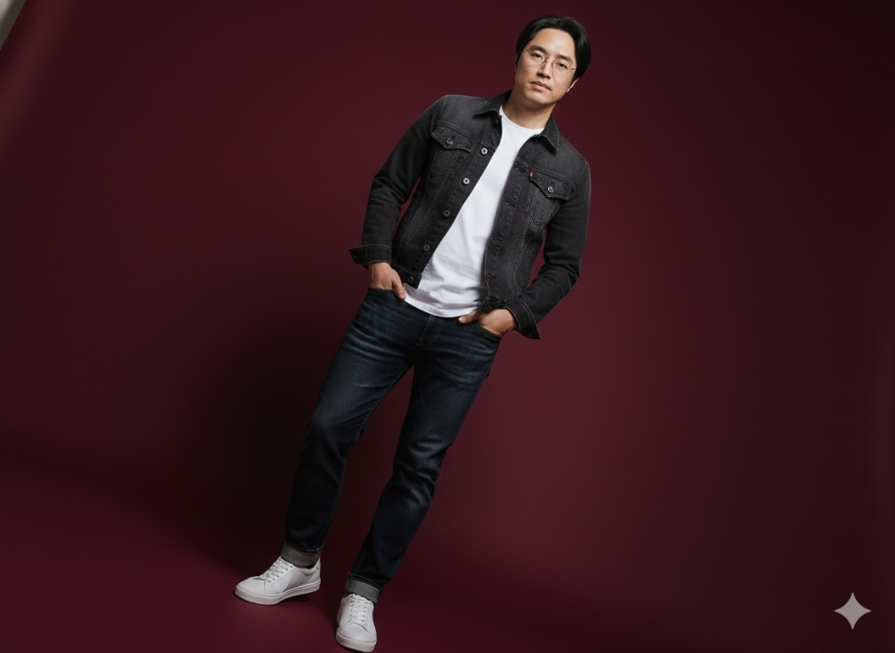

호텔컨벤션전공 홈페이지Experience & Education
- -부경대 관광경영학 석사 / 경영학 박사
- [1995~2015, 20yrs]
-
- The Westin Chosun Hotel, Sales and Marketing Manager
- SHINSEGAE Department, TRINITY CLUB Manager
- (2005), APEC 정상회의 VIP 고객 담당_영부인 전담서비스
- (2010), G20 Financial & Central Bank Governor's Meeting_연회총괄 Manager,
- 『Menu planning 총괄 (Food & Beverage 선정)』
- -부산가톨릭대학교 Master Sommelier
- -A⁺ 호주와인협회 호주와인 인증과정 Certificate
- -Berlin Wine Trophy 심사
- -국가대표 워터 소믈리에
- -전, 아베크와인부띠크 대표
- -전 부산경상대학교, 호텔관광·항공계열 교수
- -한국관광공사 호텔업등급결정요원(전문가)
- -국제직업능력평가원 운영위원
- -한국관광공사 호텔업등급 사전컨설팅 운영위원
- -대한외식창업협회 전문위원